Shortbow
Run and gun: it draws fast and lets you keep sprinting while it draws, for lighter, looser arrows.
Crafting
 →
→
Every weapon, arrow and part with its numbers and recipe. Hover or tap a slot for its name.
| Weapon | Full draw | Perfect window | Damage | Speed (blocks/s) | Spread | Durability |
|---|---|---|---|---|---|---|
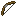 Bow | 1 s | 0.2 s | ×1 | 60 | 1 | 384 |
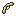 Shortbow | 0.6 s | 0.2 s | ×0.7 | 52 | 1.5 | 256 |
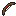 Longbow | 1.6 s | 0.2 s | ×1.2 | 76 | 0.6 | 448 |
| 0.9 s | 0.3 s | ×1.15 | 64 | 0.9 | 512 |
Run and gun: it draws fast and lets you keep sprinting while it draws, for lighter, looser arrows.
The sniper's bow: a long draw for hard, true shots on a flatter arc (gravity ×0.75). You all but stand still to draw it, and can't start a draw from a run.
The forgiving bow: a Perfect window 2 ticks wider than any other, and a little more punch than vanilla's.
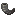
| Weapon | Load | Perfect window | Damage | Speed (blocks/s) | Spread | Durability |
|---|---|---|---|---|---|---|
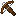 Crossbow | 1.25 s | none | ×1 | 63 | 1 | 465 |
| Arbalest | 3 s | none | ×1.6 | 72 | 0.4 | 600 |
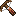 Repeating Crossbow | 4 s | none | ×0.45 | 60 | 2 | 520 |
The siege crossbow: a long crank you can't walk through, then a bolt that passes through 3 mobs in a row, ignores 50% of armour, knocks back harder, and knocks a raised shield down for 3 s.
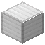
The burst crossbow: one long crank loads 5 bolts, fired one a click, 0.6 s apart.
Spread is in vanilla's units: a vanilla bow's is 1, and a Perfect Release has none. Speed is at full draw.
A head's bonus counts toward the ×2.5 cap, and its penalty comes after it. "Comes back" is the chance one stuck in a creature drops when it dies.
Tipped arrows and spectral arrows keep working as in vanilla.
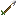
The wound bleeds: 1 damage a second for 4 s. Armour shortens the bleed, and 10 armour points stop it.
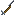
60% of the target's armour doesn't count.
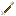
Knocks back hard (+2 Punch) and makes the target start its attack over: a creeper's fuse resets. Knocks a Shieldbearer's shield aside for 1.5 s.
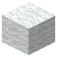
Head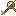
Shot into a wall or under a ceiling, it hangs a rope down, up to 24 blocks. Climb it like a ladder; break the top to take the whole rope back.
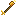
Lights where it lands for 30 s, and mobs within 8 blocks glow for 10 s.
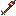
Explodes where it strikes (power 1.5; a creeper's is 3). Creatures around take half a vanilla explosion's damage, the one it hits takes it in full, and you can be caught in it too. Breaks no blocks unless the server turns that on. The Repeating Crossbow's magazine takes it one at a time.
| Level | Wants | Gives | Uses |
|---|---|---|---|
| 2 | 8 | 12 | |
| 3 | 8 | 12 | |
| 4 | 4 | 12 |
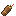
Holds 4 kinds of arrows; R picks which one the bow draws.
Taken down from a Rope Arrow's rope. Use it on a hanging rope to add one at the bottom, or hang it under a ledge or on a wall.
Dropped by Gale Harriers: a Flare Arrow's extra part.
Dropped by Gale Harriers: a Blast Arrow's extra part, and the Repeating Crossbow's trigger.
Dropped by Bog Lurkers: a Flare Arrow's extra part in place of a Harrier Feather, for twice the arrows.
The Marksman's sure drop: with a book, the top tiers of Deadeye and Steady.
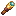
→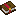